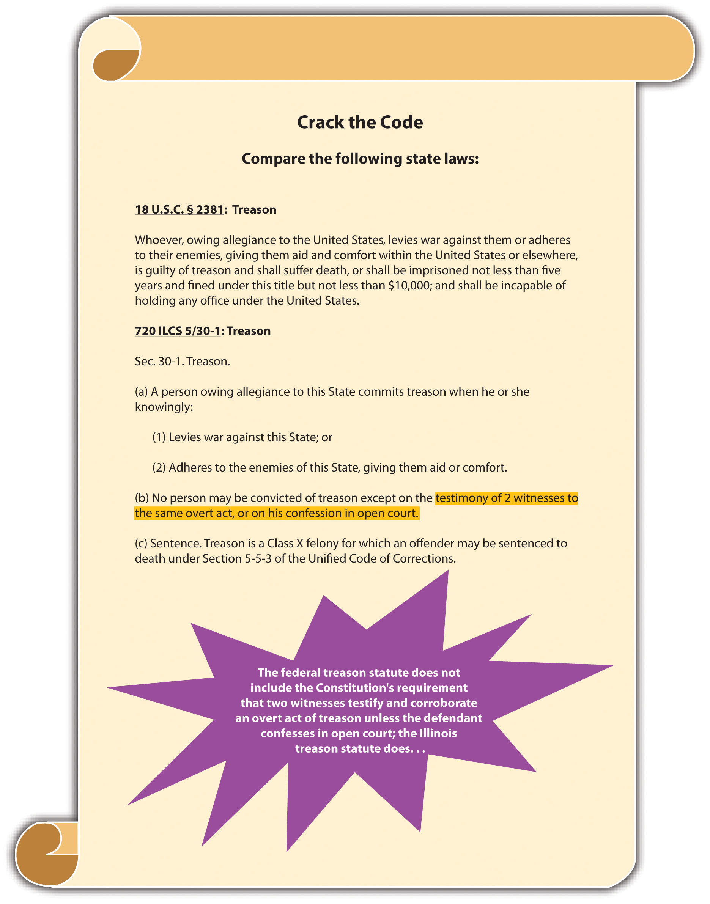
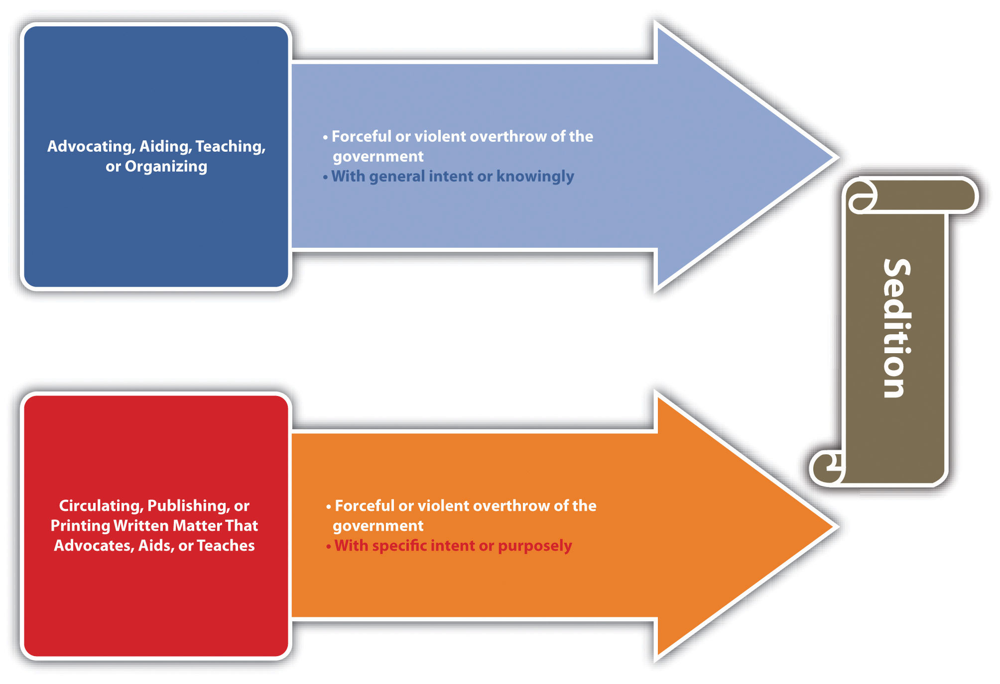
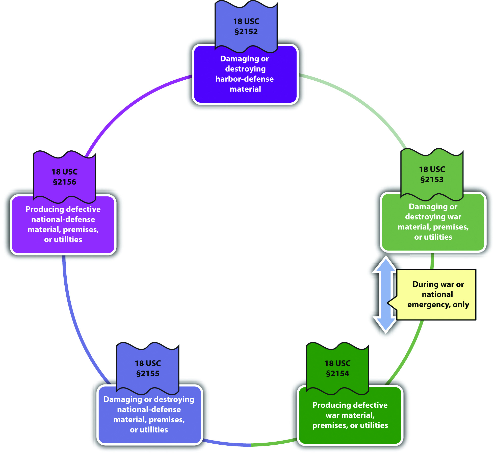
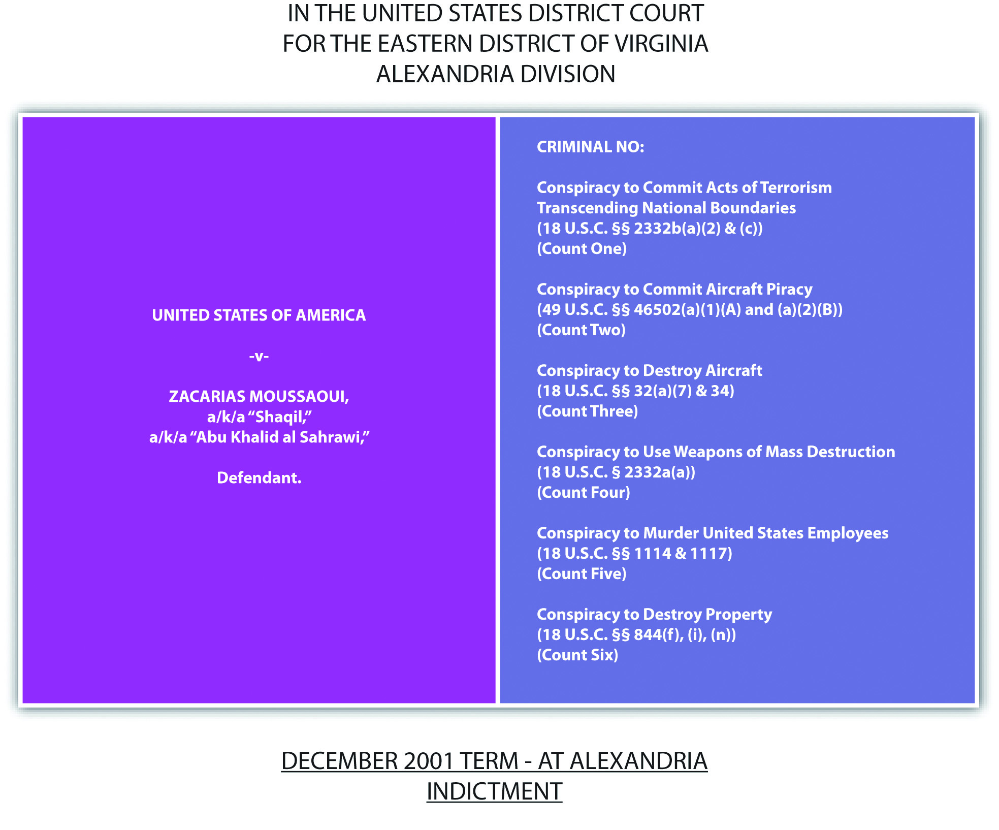
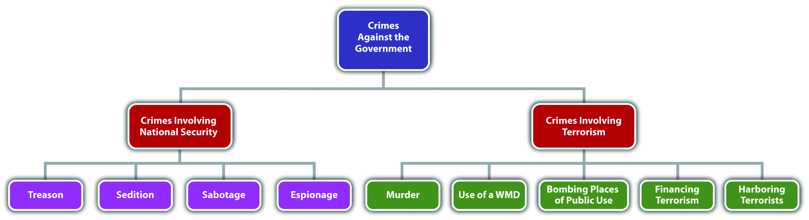
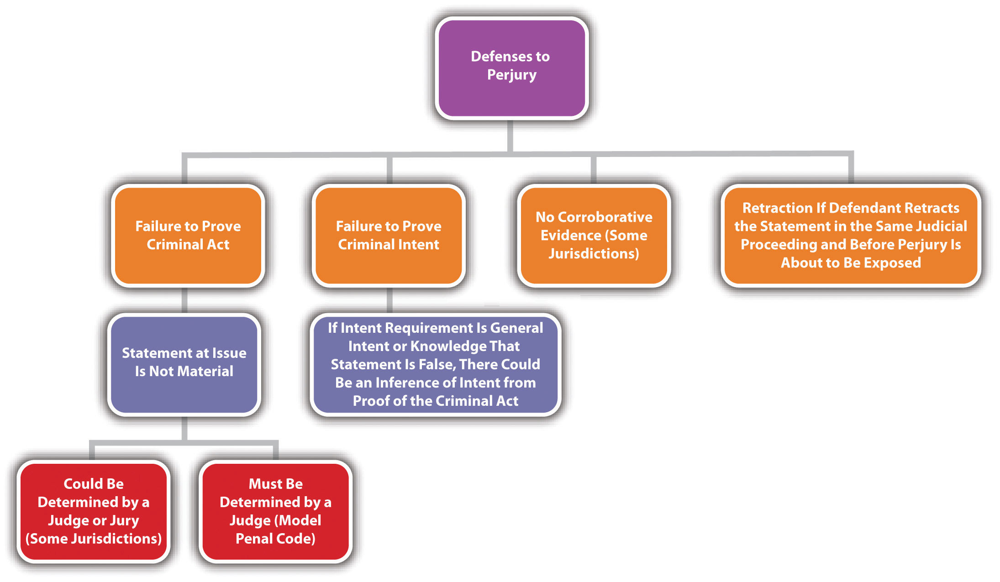
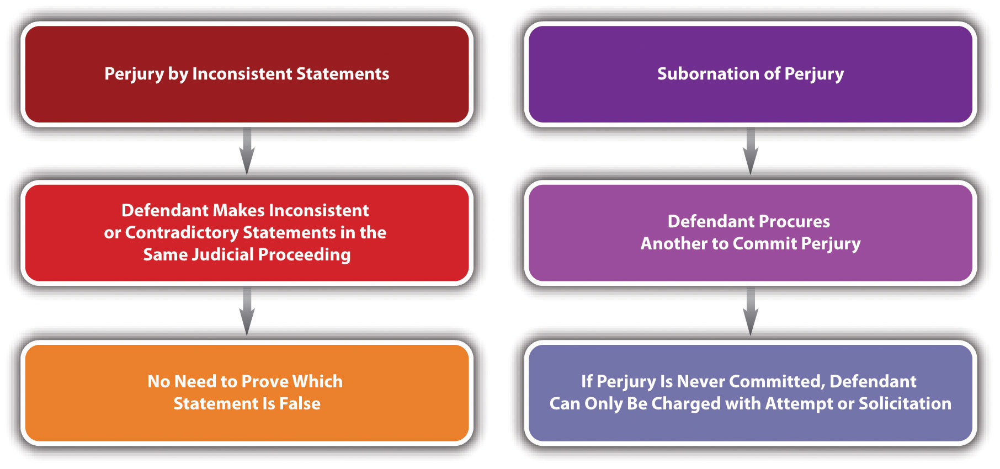
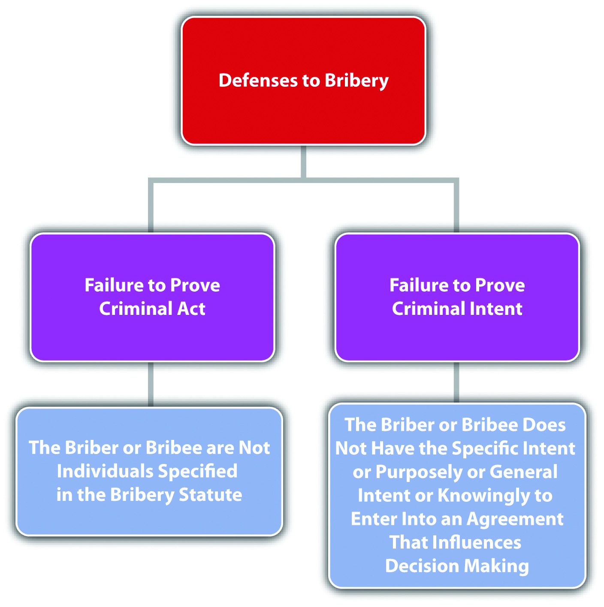
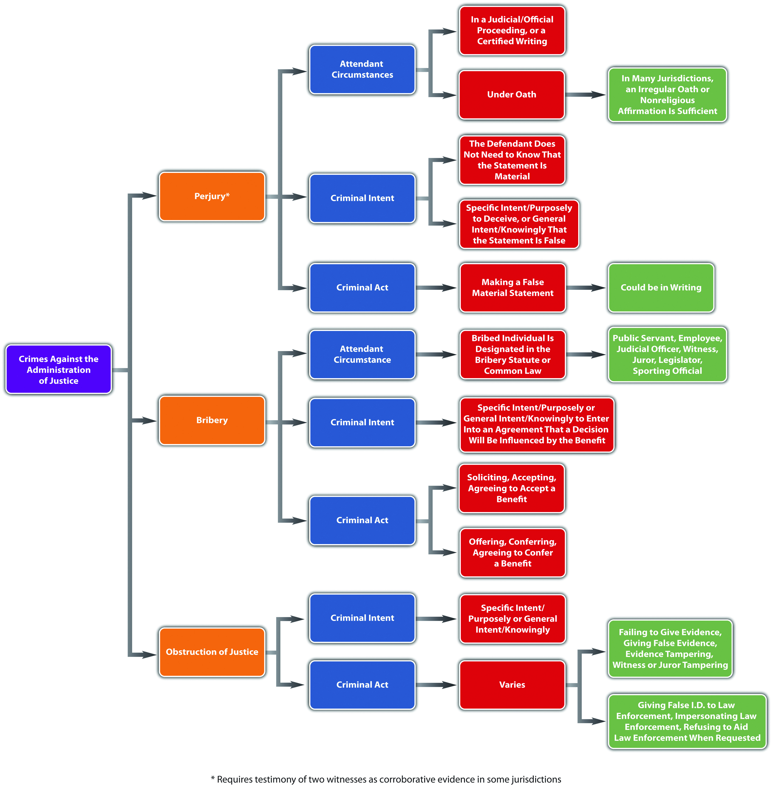

Source: Image courtesy of Tara Storm.
Bribery, of course, connotes a voluntary offer to obtain gain, where extortion connotes some form of coercion.
The government is tasked with keeping the nation safe from domestic and international attacks on the government and citizens. National security is an issue that affects the entire country, so most of the regulation in this area is federal, rather than state.Pennsylvania v. Nelson, accessed May 1, 2011, 350 U.S. 497 (1956), http://supreme.justia.com/us/350/497/case.html. Criminal statutes protecting the government can encroach on the individual freedom to protest government action and can also affect privacy interests, which subjects them to enhanced constitutional scrutiny similar to the crimes against the public reviewed in Chapter 12 "Crimes against the Public". This section explores crimes against the nation, such as treason, sedition, sabotage, and espionage. Section 13.2 "Crimes Involving Terrorism" examines terrorism and the USA PATRIOT Act. The last section of this chapter discusses other crimes against the government that are primarily state regulated, such as perjury, bribery, and obstruction of justice.
Article III § 3 of the US Constitution defines treasonLevying war against the United States or adhering to the enemy by providing the enemy with aid and comfort. and specifies the evidentiary requirements for any treason trial. The founding fathers wanted to ensure that the government would not charge an individual with treason without significant and reliable proof. Treason was punishable by death in England, so it was a constant threat to anyone who disagreed with the ruling party. Although the treason clause in the Constitution is modeled after the early English law defining treason, it omits a section that criminalized “imagining the death of the King” and also limits Congress’s authority to extend or expand the crime of treason or to lighten the evidentiary requirements.
The pertinent section of the Constitution states, “Treason against the United States shall consist only in levying War against them, or, in adhering to their Enemies, giving them Aid and Comfort. No Person shall be convicted of Treason unless on the Testimony of two Witnesses to the same overt Act, or on Confession in open Court.”
The criminal act element required for treason is levying war against the United States or adhering to the enemy by giving aid and comfort.18 U.S.C. § 2381, accessed April 29, 2011, http://www.law.cornell.edu/uscode/718/usc_sec_18_00002381----000-.html. Prosecutions for treason are practically nonexistent, so case law in this area is dated, yet still constitutes viable precedent. In U.S. v. Burr, 25 F Cas 55 (1807), a case involving then-vice president Aaron Burr’s prosecution for treason, the US Supreme Court held that levying war means an actual assembling of men, not a conspiracy to levy war, nor a mere enlistment of men. In Haupt v. U.S., 330 U.S. 631 (1947), the US Supreme Court held that the defendant’s acts of harboring and sheltering his son in his home, helping him to purchase an automobile, and obtain employment constituted providing aid and comfort to the enemy because the defendant’s son was a spy and saboteur. The criminal intent element required for treason is most likely the general intent or knowingly to commit an act of levying war or the specific intent or purposely to betray the United States by giving aid and comfort to enemies.Cramer v. U.S., 325 U.S. 1 (1945), http://supreme.justia.com/us/325/1. The Constitution specifies the evidentiary requirements that two witnesses testify to an overt act of treason or that the defendant confess in open court, although this is not set forth in the federal treason statute.18 U.S.C. § 2381, accessed April 29, 2011, http://www.law.cornell.edu/uscode/718/usc_sec_18_00002381----000-.html. As stated in Cramer v. U.S., 325 U.S. 1, 34, 35 (1945), “Every act, movement, deed, and word of the defendant charged to constitute treason must be supported by the testimony of two witnesses,” and it is not enough that the elements of treason can be inferred from the witness statements. Treason is graded as a felony that can merit the death penalty or prohibit the defendant from ever holding federal office.18 U.S.C. § 2381, accessed April 29, 2011, http://www.law.cornell.edu/uscode/718/usc_sec_18_00002381----000-.html.
Benedict is identified as a person of interest in a treason case. A government agent posing as an enemy spy invites Benedict to dinner, and they discuss the decline of the United States and whether or not they should “do something about it.” At the conclusion of the dinner, Benedict picks up the tab. Thereafter, Benedict is arrested for treason and refuses to incriminate himself by responding to law enforcement interrogation. It is unlikely that Benedict will be convicted of treason in this case. Benedict paid for the government agent’s dinner, which could constitute providing aid to the enemy. However, Benedict indicated a hesitancy to take further action, which does not satisfy the requirement that he act with the specific intent or purposely to betray the United States. In addition, only the government agent can testify as to Benedict’s act of paying for a meal because Benedict is asserting his right to remain silent. Therefore, the constitutional requirement that two witnesses testify about the overt act charged as treason is not satisfied. The intent element and evidentiary requirement for treason are lacking, so Benedict probably will not be subject to prosecution for and conviction of this offense.
Figure 13.1 Crack the Code
SeditionIncitement of insurrection or revolution by force or violence. criminalizes the incitement of insurrection or revolution by seditious speech or writings and, as such, is subject to the restrictions set forth in the First Amendment. The first federal law prohibiting sedition was the Sedition Act enacted in 1798 and repealed by Thomas Jefferson after his election as president. The current federal statute criminalizing sedition was originally enacted in 1940 and is codified at 18 U.S.C. § 2385. Conspiracy to commit sedition is codified at 18 U.S.C. § 2384. Many states have similar provisions.51 Pa. Cons. Stat. Ann. § 6018, accessed April 30, 2011, http://law.onecle.com/pennsylvania/military-affairs/00.060.018.000.html. Like treason, sedition is rarely prosecuted.
The criminal act element required for sedition is either advocating, aiding, teaching, organizing or printing, publishing, or circulating written matter that advocates, aids, or teaches the overthrow of the US government or any state, district, or territory thereof by force or violence.18 U.S.C. § 2385, accessed April 30, 2011, http://www.law.cornell.edu/uscode/718/usc_sec_18_00002385----000-.html. The criminal intent element required for sedition is the general intent or knowingly to advocate, aid, teach, or organize, or the specific intent or purposely to print, publish, or circulate written matter that advocates, aids, or teaches the violent government overthrow.18 U.S.C. § 2385, accessed April 30, 2011, http://www.law.cornell.edu/uscode/718/usc_sec_18_00002385----000-.html. In Yates v. U.S., 354 U.S. 298 (1957), the US Supreme Court held that only advocacy directed at promoting unlawful action could be constitutionally prohibited. Advocacy of an “abstract doctrine” was protected by the First Amendment as free speech.Yates v. U.S., 354 U.S. 298, 318 (1957), accessed April 30, 2011, http://scholar.google.com/scholar_case?case=14369441513839511604&q= Yates+v.+U.S.&hl=en&as_sdt=2,5. Sedition is graded as a felony that can prohibit the defendant from obtaining employment with the US government for a minimum of five years postconviction.18 U.S.C. § 2385, accessed April 30, 2011, http://www.law.cornell.edu/uscode/718/usc_sec_18_00002385----000-.html.
Mo, a disgruntled immigrant who has been denied citizenship, decides he wants to overthrow the US government and supplant it with a new government that will grant the citizenship privileges he desires. Mo prints up leaflets advocating the overthrow of the government by placing a series of bombs in strategic and specifically named places and passes them out every Saturday in front of varied places known for ethnic diversity throughout the city. Mo has most likely committed sedition in this example. Mo printed written matter advocating the overthrow of the US government by unlawful action, using force and violence. Mo’s intent was to get rid of the current government so that he could gain citizenship, which is specific intent or purposely. Thus Mo’s conduct probably constitutes sedition, and he may be subject to prosecution for and conviction of several counts of this offense.
Figure 13.2 Diagram of Sedition
SabotageDestroying or damaging property or producing defective property that impedes the US national defense or ability to participate in or prepare for war. is criminalized at 18 U.S.C. § 2151 et seq., which includes several different forms of this offense. Many states have similar provisions.RCW § 9.05.060, accessed May 1, 2011, http://apps.leg.wa.gov/rcw/default.aspx?cite=9.05.060. In general, sabotage is destroying, damaging, or defectively producing (criminal act and harm) property with the specific intent or purposely, general intent or knowingly, or negligently to impede the nation’s ability to prepare for or participate in war and national defense and is detailed in the following United States Codes:
Both 18 U.S.C. §§ 2153 and 2154 have the attendant circumstance that the conduct occur during war or a national emergency. All the sabotage statutes grade sabotage as a felony, with sentences ranging from five to thirty years’ incarceration in federal prison.
Sabotage is prosecuted more often than treason and sedition, and there have been some extremely interesting criminal sabotage cases, including sabotage indictments against a corporation manufacturing defective raincoats for the armed forces during wartime, a sabotage trial for the burning of an ROTC building on the Washington University campus after the Kent State University riots, a sabotage trial for defendants who stole copper wire from a railroad track that was used to ship war materials, and the sabotage indictment of Osama bin Laden for extraterritorialOutside the United States. (outside the United States) activity.
Review the example in Section 13 "Example of Sedition" with Mo. Add to this example and imagine that Mo gets no response to his fliers and becomes enraged. He decides to get back at the United States for not allowing him to become a US citizen by harming its national security and exposing it to attack by enemy forces. He thereafter hacks into the computer system used by the US Department of Defense and damages it so that it is out of commission for two weeks. Mo has most likely committed the federal crime of sabotage. Mo damaged national defense material with the specific intent or purposely to interfere with the nation’s security and defense, which is prohibited under 18 U.S.C. § 2155, whether or not it is wartime or during a national emergency. Thus Mo may be subject to prosecution for and conviction of this offense and could face many years of incarceration for his conduct.
Figure 13.3 Diagram of Sabotage
EspionageSpying on the US government during peace or wartime., also known as “spying,” is criminalized at 18 U.S.C. § 792 et seq. Originally part of one of the early versions of the Sedition Act of 1918, the crime of espionage has a colorful history and many interesting criminal prosecutions similar to criminal sabotage. Federal espionage statutes criminalize various acts, depending on whether the conduct occurs during peace or during war. During times of peace, it is criminal espionage to gather, transmit, or attempt to gather or transmit defense information (criminal act) with general intent or knowingly, or with the specific intent or purposely that it will be used to damage the United States or assist any foreign nation.18 U.S.C. § 793, accessed May 1, 2011, http://www.law.cornell.edu/uscode/718/usc_sec_18_00000793----000-.html. During times of war, it is criminal espionage to collect, record, publish, or communicate information about military activities or to attempt any of the foregoing (criminal act) with the specific intent or purposely that the information will be transmitted to the enemy.18 U.S.C. § 794(b), accessed May 1, 2011, http://www.law.cornell.edu/uscode/718/usc_sec_18_00000794----000-.html. Espionage is graded as a felony, with potential sentencing of life in prison or the death penalty.18 U.S.C. § 792 et seq., accessed May 1, 2011, http://www.law.cornell.edu/uscode/718/usc_sup_01_18_10_I_20_37.html.
Some interesting criminal espionage cases are the Rosenberg case, where a married couple conspired to pass nuclear secrets to the Soviets and were later executed pursuant to the death penalty, the Hanssen case, where an FBI agent sold state secrets to Moscow for $1.4 million in cash and diamonds, and the Aragoncillo case, where a White House employee stole intelligence documents from White House computers and e-mailed them to the Philippines.
Review the example given in Section 13 "Example of Sabotage" with Mo and his computer hacking. Change the example so that before Mo damages the US Department of Defense computer system, he copies some information from different top-secret sites and sends them to operatives in an enemy nation with this message: “I have stolen this information directly from the US Department of Defense. I have also disabled their computer system, which will probably take some time to repair. Now is an excellent time to attack the United States.” He thereafter severely damages the computer system. In this example, Mo has most likely committed both sabotage and espionage. As stated in Section 13 "Example of Sabotage", Mo probably committed sabotage when he damaged national defense material with the specific intent or purposely to interfere with the nation’s security and defense. When Mo copied top-secret information and sent it to an enemy nation, along with informing the nation that the US Department of Defense computer system was disabled, he gathered and transmitted information with the specific intent or purposely that it be used to injure the United States. Thus Mo has probably committed both sabotage and espionage and may be subject to prosecution for and conviction of these offenses.
President Obama on the Death of Osama bin Laden
President Obama’s speech explaining Osama bin Laden’s death is shown in this video:
(click to see video)Table 13.1 Comparing Treason, Sedition, Sabotage, and Espionage
| Crime | Criminal Act or Harm | Criminal Intent | Attendant Circumstance(s) |
|---|---|---|---|
| Treason* | Levy war, or give aid and comfort to enemies | Most likely, general intent or knowingly to levy war, specific intent or purposely to betray the United States with aid and comfort | |
| Sedition | Advocating or printing matter that advocates the forceful or violent overthrow of the US government | General intent or knowingly to advocate, specific intent or purposely when printing matter that advocates the forceful or violent overthrow of the US government | |
| Sabotage | Varies: either destroying, damaging, or producing defective property that impedes US defense capabilities | Varies: specific intent or purposely, general intent or knowingly or negligently | Certain conduct must take place during war or a national emergency |
| Espionage | Spying | Varies: either general intent or knowingly, or specific intent or purposely that information will be transmitted to the enemy | Certain conduct must take place during war |
| *Includes the evidentiary requirement of the testimony of two witnesses or the defendant’s confession in open court | |||
Answer the following questions. Check your answers using the answer key at the end of the chapter.
In recent years, crimes involving terrorism have escalated both in the United States and abroad. The federal government’s response has been to enact comprehensive criminal statutes with severe penalties targeting terroristic conduct. In this section, federal statutes criminalizing acts of terrorism are reviewed, along with potential constitutional challenges.
Before the September 11, 2001, terrorist attacks on the United States, the primary federal statutes criminalizing terrorism were the Omnibus Diplomatic Security and Antiterrorism Act of 1986 and the Antiterrorism and Effective Death Penalty Act of 1996 (AEDPA), which was enacted after the Oklahoma City bombings. After September 11, 2001, Congress enacted the USA PATRIOT ActFederal statutory scheme enacted after September 11, 2001, that strengthens existing laws targeting terrorism or terroristic conduct. Stands for Uniting and Strengthening America by Providing Appropriate Tools Required to Intercept and Obstruct Terrorism., which stands for Uniting and Strengthening America by Providing Appropriate Tools Required to Intercept and Obstruct Terrorism Act of 2001.
The USA PATRIOT Act changed and strengthened existing laws targeting terrorism and enhanced US capabilities to prosecute terrorism committed abroad. Specifically, the USA PATRIOT Act increases federal jurisdiction over crimes committed outside the United States,USA PATRIOT Act, Tit. VIII § 804, accessed May 4, 2011, http://frwebgate.access.gpo.gov/cgibin/getdoc.cgi?dbname=107_cong_public_laws&docid=f:publ056.107.pdf. creates new crimes involving financial support of terrorism or terrorists abroad,USA PATRIOT Act, Tit. VIII § 805, accessed May 4, 2011, http://frwebgate.access.gpo.gov/cgi-bin/getdoc.cgi?dbname=107_cong_public_laws&docid=f:publ056.107.pdf. and provides for the civil forfeiture of assets connected to terrorism.USA PATRIOT Act, Tit. VIII § 806, accessed May 4, 2011, http://frwebgate.access.gpo.gov/cgi-bin/getdoc.cgi?dbname=107_cong_public_laws&docid=f:publ056.107.pdf. Other fundamental changes incorporated in the USA PATRIOT Act are the expansion of government surveillance capabilities, including telephone interception and scrutiny of e-mails.USA PATRIOT Act, Tit. II, § 203 et seq., http://frwebgate.access.gpo.gov/cgi-bin/getdoc.cgi?dbname=107_cong_public_laws&docid=f:publ056.107.pdf.
In 2002, Congress created the Department of Homeland SecurityFederal agency tasked with enforcing terrorism laws. (DHS) under the authority of the Homeland Security Act. DHS enforces provisions of federal laws against terrorism and includes the following agencies: the Secret Service, Customs, the Federal Emergency Management Agency, United States Coast Guard, Border Patrol, Transportation Security Administration, and Citizenship and Immigration Services.Department of Homeland Security website, accessed May 4, 2011, http://www.dhs.gov/index.shtm.
International terrorismViolent acts committed outside the United States that would be criminal if committed in the United States and that appear to be intended to influence a civilian population or government by intimidation or to affect the conduct of government by mass destruction, assassination, or kidnapping. is defined as violent acts committed outside the United States that would be criminal if committed in the United States, and that appear to be intended to influence a civilian population or government by intimidation, or to affect the conduct of government by mass destruction, assassination, or kidnapping.18 U.S.C. § 2331(1), accessed May 3, 2011, http://www.law.cornell.edu/uscode/718/usc_sec_18_00002331----000-.html. Specific crimes such as murder, attempted murder, and conspiracy to commit murder committed against an American nationalUS citizen or individual owing permanent allegiance to the United States. (defined as an American citizen or individual who owes permanent allegiance to the United States)8 U.S.C. § 1101(a) (22), accessed May 3, 2011, http://www.law.cornell.edu/uscode/html/uscode08/usc_sec_08_00001101----000-.html. while outside the United States are graded as high-level felonies with all ranges of sentencing options available, including the death penalty.18 U.S.C. § 2332, accessed May 3, 2011, http://www.law.cornell.edu/uscode/718/usc_sec_18_00002332----000-.html.Domestic terrorismViolent acts committed inside the territorial jurisdiction of the United States that appear to be intended to influence a civilian population or government by intimidation or to affect the conduct of government by mass destruction, assassination, or kidnapping. is defined exactly the same as international terrorism, except that the violent acts are committed within the territorial jurisdiction of the United States.18 U.S.C. § 2331(5), accessed May 3, 2011, http://www.law.cornell.edu/uscode/718/usc_sec_18_00002331----000-.html. Prohibited as terrorism are the use of a weapon of mass destructionAny destructive device or weapon designed to cause death or serious bodily injury through the release of chemicals, toxins, or radioactivity., which is defined as any destructive device or weapon designed to cause death or serious bodily injury through the release of chemicals, toxins, or radioactivity,18 U.S.C. § 2332A(c) (2), accessed May 4, 2011, http://www.law.cornell.edu/uscode/718/usc_sec_18_00002332---a000-.html. bombings of places of public use—including public transportation systems18 U.S.C. § 2332F, accessed May 4, 2011, http://www.law.cornell.edu/uscode/718/usc_sec_18_00002332---f000-.html.—financing of terrorism,18 U.S.C. § 2339C, accessed May 3, 2011, http://www.law.cornell.edu/uscode/718/usc_sec_18_00002339---C000-.html. harboring or concealing terrorists,18 U.S.C. § 2339, accessed May 3, 2011, http://www.law.cornell.edu/uscode/718/usc_sec_18_00002339----000-.html. or attempt or conspiracy to do any of the foregoing. All these crimes are graded as serious felonies.
Zacarias Moussaoui, a French citizen, was the only defendant prosecuted for the September 11, 2001, terrorist attacks. Although Moussaoui was not onboard any of the planes that crashed into the World Trade Center, Pentagon, and a Pennsylvania field because he was in federal custody, he was indictedZacarias Moussaoui indictment, Justice.gov website, accessed May 4, 2011, http://www.justice.gov/ag/moussaouiindictment.htm. for several counts of conspiracy to commit terrorism and aircraft piracy and pleaded guilty to all charges. Specifically, Moussaoui pleaded guilty to conspiracy to commit acts of terrorism transcending national boundaries, conspiracy to commit aircraft piracy, conspiracy to destroy aircraft, conspiracy to use weapons of mass destruction, conspiracy to murder US employees, and conspiracy to destroy property of the United States. After the extended trial, during which Moussaoui attempted to represent himself, and the resulting guilty pleas, the jury carefully considered and recommended against the death penalty for Moussaoui, who was thereafter sentenced to life in prison.Jerry Markon, Timothy Dwyer, “Jurors Reject Death Penalty for Moussaoui,” Washington Post website, accessed May 11, 2011, http://www.washingtonpost.com/wp-dyn/content/article/2006/05/03/AR2006050300324.html. Moussaoui later moved to withdraw his guilty pleas, but his motion was rejected by the US District Court for the Eastern District of Virginia,U.S. v. Moussaoui, Criminal No. 01-455-A (2003), accessed May 4, 2011, http://law2.umkc.edu/faculty/projects/ftrials/moussaoui/withdrawguilty.pdf. whose decision was later affirmed by the US Court of Appeals for the Fourth Circuit.U.S. v. Moussaoui, 591 F.3d 263 (2010), accessed May 4, 2011, http://scholar.google.com/scholar_case?case=5511221851556025255&q= U.S.+v.+Moussaoui&hl=en&as_sdt=2,5.
Figure 13.4 Moussaoui Indictment
Portions of the USA PATRIOT Act provide for enhanced government surveillance capabilities, which are considered a search, so constitutional implications are present pursuant to the Fourth Amendment, which prohibits unreasonable search and seizure. In addition, provisions of the Act that prohibit financing terrorists and terrorism have been attacked as violative of the First Amendment’s protection of free speech, free association, and freedom of religion. Litigation involving these challenges is ongoing and was filed on behalf of citizens by the American Civil Liberties Union (ACLU).Nancy Kranich, “The Impact of the USA PATRIOT Act: An Update,” Fepproject.org website, accessed May 4, 2011, http://www.fepproject.org/commentaries/patriotactupdate.html.
Figure 13.5 Diagram of Crimes Involving National Security and Terrorism
Answer the following questions. Check your answers using the answer key at the end of the chapter.
Crimes against the administration of justice impede the government’s ability to carry out the important functions of prosecuting and convicting criminals, which, in turn, destroys citizens’ confidence that the US legal system is effective in ensuring individual safety and security. This section analyzes perjury, bribery, and obstruction of justice, along with the issues commonly encountered when prosecuting these offenses. Additional statutes criminalizing contempt of court, resisting arrest, and escape are also available for review.
Witness testimony is important in a variety of settings. Juries depend on witness testimony to reach a fair and impartial verdict in civil and criminal trials, and grand juries depend on witness testimony to indict defendants for criminal conduct. Thus modern laws of perjuryA false material statement made under oath in a judicial or official proceeding or in a certified writing with awareness of the falsity of the statement or the specific intent to deceive. are calculated to ensure that witnesses testify truthfully so that justice can be done in each individual case.
In the Middle Ages, the witnesses were the jurors, so the criminalization of false witness testimony did not occur until the sixteenth century when the idea of a trial by an impartial jury emerged. The first common-law prohibition against witness perjury criminalized false testimony, given under oath, in a judicial proceeding, about a material issue. This definition was also incorporated into early American common law.“Perjury—Perjury at Common Law,” Jrank.org website, accessed May 5, 2011, http://law.jrank.org/pages/1632/Perjury-Perjury-at-common-law.html.
In modern times, every state prohibits perjury, as well as the federal government.18 U.S.C. § 1621, accessed May 5, 2011, http://www.law.cornell.edu/uscode/718/usc_sec_18_00001621----000-.html. Most state statutes or state common law, in states that allow common-law crimes, define perjury as a false material statement (criminal act), made with the specific intent or purposely to deceive, or the general intent or knowingly that the statement was false, in a judicial or official proceeding (attendant circumstance), under oath (attendant circumstance).Ga. Code tit. 16 § 16-10-70, accessed May 5, 2011, http://law.onecle.com/georgia/16/16-10-70.html. The Model Penal Code defines perjury as a false material statement, that the defendant does not believe to be true, made under oath in any official proceeding (Model Penal Code § 241.1(1)). The biggest issues commonly encountered in any perjury prosecution are proving the validity of the oath, the defendant’s criminal intent, the materiality of the false statement, and any requirement of corroborative evidence.
The defendant must be under oath when making the statement at issue in any perjury prosecution, and the oath must be administered by someone of legal authority or someone authorized to take evidence under oath,Connecticut Jury Instructions § 53a-156, accessed May 5, 2011, http://www.jud.ct.gov/ji/criminal/part4/4.5-9.htm. including a referee, hearing examiner, commissioner, notary, or other person authorized to take evidence in connection with an official or judicial proceeding.Connecticut Jury Instructions § 53a-156, accessed May 5, 2011, http://www.jud.ct.gov/ji/criminal/part4/4.5-9.htm. Federally and in many jurisdictions, the false statement can be written, as long as it is certified, such as a signature on an income tax return18 U.S.C. § 6065, accessed May 5, 2011, http://www.law.cornell.edu/uscode/26/usc_sec_26_00006065----000-.html. or a report.Cal. Penal Code § 129, accessed May 5, 2011, http://law.onecle.com/california/penal/129.html. The Model Penal Code also considers a false written statement perjury, as long as the document containing the statement is made upon oath or affirmation (Model Penal Code § 241.1(3)). In spite of the attendant circumstance requirement that the statement be made under oath, many jurisdictions disallow a defense to a prosecution for perjury based on the assertion that the oath or affirmation was administered or taken in an irregular manner.Ala. Code § 13A-10-108, accessed May 5, 2011, http://law.onecle.com/alabama/criminal-code/13A-10-108.html. The Model Penal Code has a similar provision (Model Penal Code § 241.1(3)). In addition, many jurisdictions have a provision that witnesses who refuse to take an oath shall have the option of making a nonreligous affirmation that has the same legal effect as the oath.42 Pa. Cons. Stat. Ann. § 5901, accessed May 5, 2011, http://law.onecle.com/pennsylvania/judiciary-and-judicial-procedure/00.059.001.000.html. The Model Penal Code allows for an “oath or equivalent affirmation” (Model Penal Code § 241.1(1)).
As stated previously, in many jurisdictions, the defendant must know that a statement is false or must make the statement with the specific intent or purposely to deceive. When the intent requirement is general intent or knowledge that the statement is false, proof that the statement is false could give rise to an inference of intent.State v. Kimber, 48 Conn. App. 234 (1998), accessed May 5, 2011, http://scholar.google.com/scholar_case?case=17399056576949304157&q= State+v.+Kimber+48&hl=en&as_sdt=2,5.
Perjury generally requires a false statement that is material, which means that it substantially affected or could substantially affect the outcome of the proceeding.Mo. Ann. Stat. § 575.040, accessed May 5, 2011, http://www1.law.umkc.edu/suni/CrimLaw/calendar/Class_4_Mo_perjury.htm. In many jurisdictions and federally, materiality is a question of fact for the trier of fact, which could be a jury.U.S. v. Gaudin, 515 U.S. 506 (1995), accessed May 5, 2011, http://scholar.google.com/scholar_case?case=12281686524757008977&hl=en&as_sdt=2&as_vis=1&oi=scholarr. The Model Penal Code defines materiality as a statement that could have affected the course or outcome of the proceeding and declares that materiality should be a question of law, which means it should be determined by a judge, not a jury (Model Penal Code § 241.1(2)). Typically, it is not a defense to perjury that the defendant did not know that the statement was material.Mo. Ann. Stat. § 575.040(3) (1), accessed May 5, 2011, http://www1.law.umkc.edu/suni/CrimLaw/calendar/Class_4_Mo_perjury.htm. The Model Penal Code has a similar provision (Model Penal Code § 241.1(2)).
Some jurisdictions have a requirement of corroborative evidence for perjury, which necessitates the testimony of two witnesses to support a conviction, similar to a treason conviction.Tex. Code of Criminal Procedure, § 38.18, accessed May 5, 2011, http://law.onecle.com/texas/criminal-procedure/38.18.00.html. The Model Penal Code also has this corroborative evidence requirement (Model Penal Code § 241.1(6)).
Many jurisdictions provide a defense to perjury if the defendant retracts his or her false statement in the course of the same proceeding in which it was made before it becomes manifest that the falsification will be exposed.Ala. Code § 13A-10-107, accessed May 6, 2011, http://law.onecle.com/alabama/criminal-code/13A-10-107.html. The Model Penal Code has a similar provision (Model Penal Code § 241.1(4)).
Marcus is a witness in a civil suit for damages against Lindsay. Macy’s department store is suing Lindsay for the alleged theft of a diamond necklace. Marcus takes an oath sworn by the court commissioner. He thereafter testifies that he saw Lindsay try on the necklace and then walk out of the store without paying for it. When the Macy’s attorney asks Marcus what he was doing at Macy’s, Marcus responds that he was buying some jewelry as a gift for his wife. In actuality, Marcus was shopping for jewelry as a gift for his girlfriend. Marcus has probably not committed perjury in this case. Marcus is testifying as a witness in a civil rather than criminal trial, but this satisfies the perjury requirement that the testimony be offered during a judicial or official proceeding. Before testifying, Marcus took an oath that was administered by a court commissioner, also satisfying the perjury requirement that the defendant take an oath administered by someone with the legal authority or authorization to take evidence under oath. Marcus’s statement is false, and he made the statement with knowledge of its falsity, which satisfies the perjury criminal intent requirement. However, Marcus’s statement does not appear to be material to this judicial proceeding because the reason for Marcus’s presence at Macy’s will not affect the outcome of Lindsay’s civil theft trial (usually called the tort of conversion). Thus Marcus is probably not subject to prosecution for and conviction of perjury, based on his testimony in this case.
Review the example in Section 13 "Example of a Case Lacking an Element of Perjury" with Marcus. Change this example so that Marcus testifies that he did not see Lindsay walk out of the Macy’s department store without paying for the necklace because he does not want to admit that he was shopping for jewelry to buy his girlfriend. Anthony, the Macy’s civil trial attorney, cross-examines Marcus, and forces him to admit that he saw Lindsay steal the necklace, and that he was lying previously. Marcus has most likely committed perjury in this example. Marcus made a false statement, under a validly administered oath, in a judicial proceeding, with knowledge of its falsity. Marcus’s statement was material because, if believed, it would have helped exonerate Lindsay in her civil case. In many jurisdictions, the trier of fact, which could be a judge or jury, determines whether or not the statement is material. Marcus’s admission that he was lying is not a retraction that could serve as a defense because it was not made until the lie was about to be exposed. Thus all the elements of perjury appear to be present, and Marcus may be subject to prosecution for and conviction of this offense.
Figure 13.6 Diagram of Defenses to Perjury
Some jurisdictions criminalize perjury by inconsistent or contradictory statementsThe defendant makes inconsistent statements under oath in a judicial or official proceeding., which is slightly different from criminal perjury.Ala. Code § 13A-10-104, accessed May 6, 2011, http://law.onecle.com/alabama/criminal-code/13A-10-104.html. Perjury by inconsistent statements is easier to prove than traditional perjury because the prosecution can simply offer evidence that the defendant made statements that are inconsistent, in a judicial proceeding, after taking a validly administered oath. Corroborative evidence is not required, and the prosecution does not have the burden of proving that one of the statements is false, just that one or the other was false and not believed by the defendant to be true.Ala. Code § 13A-10-104, accessed May 6, 2011, http://law.onecle.com/alabama/criminal-code/13A-10-104.html. The Model Penal Code has a similar provision (Model Penal Code § 241.1(5)).
Review the example with Marcus in Section 13 "Example of Perjury". If Marcus’s jurisdiction criminalizes perjury by inconsistent statements, Marcus could most likely be prosecuted for this offense. Marcus made two inconsistent statements while under a validly administered oath in Lindsay’s conversion trial, which is a judicial proceeding. In Marcus’s criminal perjury by inconsistent statements prosecution, the prosecutor need only offer evidence of the inconsistent statements to the trier of fact. The prosecutor does not have to provide corroborative evidence and does not have the burden of proving that the first statement was false, which will simplify and expedite the trial and may subject Marcus to conviction of this offense.
Most jurisdictions criminalize subornation of perjuryProcuring another to commit perjury., which is typically procuring another to commit perjury (criminal act) with specific intent or purposely, or general intent or knowingly, and factually and legally causing the resulting harm that perjury is in fact committed.N.C. Gen. Stat. § 14-210, accessed May 6, 2011, http://law.onecle.com/north-carolina/14-criminal-law/14-210.html.
Review the example given with Marcus in Section 13 "Example of Perjury". Add to this example and assume that Marcus begs Janelle, another witness in Lindsay’s conversion trial, to say that she did not see him at Macy’s the day Lindsay stole the necklace. Janelle flatly refuses. Marcus has not committed subornation of perjury in this case. Although Marcus tried to procure Janelle to commit perjury, with specific intent or purposely, Janelle did not cooperate and did not commit the perjury. Thus the harm element of subornation of perjury is lacking, and Marcus can be prosecuted only for attempted subornation of perjury or solicitation to commit perjury, rather than the completed offense.
Figure 13.7 Comparison of Perjury by Inconsistent Statements and Subornation of Perjury
Perjury is generally graded as a felony,N.C. Gen. Stat. § 14-209, accessed May 6, 2011, http://law.onecle.com/north-carolina/14-criminal-law/14-209.html. with a potential sentencing enhancement for committing perjury that causes another to be sentenced to prison or the death penalty.Ga. Code tit. 16, § 16-10-70, accessed May 6, 2011, http://law.onecle.com/georgia/16/16-10-70.html. The Model Penal Code grades perjury as a felony of the third degree (Model Penal Code § 241.1(1)). Subornation of perjury is also graded as a felony.N.C. Gen. Stat. § 14-210, accessed May 6, 2011, http://law.onecle.com/north-carolina/14-criminal-law/14-210.html. However, because of the procedural difficulties in successfully convicting a defendant of perjury and subornation of perjury, these crimes are not often prosecuted. Nonetheless, the threat of a felony conviction still serves as a deterrent and helps to ensure that witnesses testify truthfully in judicial and official proceedings and give accurate statements in certified writings.
BriberyOffering, conferring, agreeing to confer, or soliciting, accepting, or agreeing to accept a benefit to or from a designated individual for the purpose of influencing decision making. is often compared to extortion, yet extortion is considered a crime of threatened force or violence, while bribery involves financial inducement.U.S. v. Adcock, 558 F.2d 397 (1977), accessed May 6, 2011, http://scholar.google.com/scholar_case?case=189694239263939940&hl=en&as_sdt=2&as_vis=1&oi=scholarr. At early common law, bribery was the receiving or offering any undue reward by or to any person in a public office in order to influence his or her behavior in office and induce him or her to act contrary to the known rules of honesty and integrity.Legal definition of bribery, Duhaime.org website, accessed May 6, 2011, http://www.duhaime.org/LegalDictionary/B/Bribery.aspx. In modern times, many criminal statutes define bribery as conferring, offering, agreeing to confer, or soliciting, accepting, or agreeing to accept any benefit upon a public official (criminal act) with the specific intent or purposely or the general intent or knowingly to form an agreement or understanding that the public official’s vote, opinion, judgment, action, decision, or exercise of discretion will be influenced by the benefit.N.Y. Penal Law § 200.00, accessed May 6, 2011, http://law.onecle.com/new-york/penal/PEN0200.00_200.00.html; N.Y. Penal Law § 200.10, http://law.onecle.com/new-york/penal/PEN0200.10_200.10.html. The crime of bribery is often extended to apply to persons other than public officials, such as employees, agents, or fiduciaries for the purpose of influencing the bribed individual’s on-the-job conduct.N.Y. Penal Law § 180.00, accessed May 6, 2011, http://law.onecle.com/new-york/penal/PEN0180.00_180.00.html. This type of bribery is typically called commercial briberyBribery of an employee for the purpose of influencing on-the-job conduct..N.Y. Penal Law § 180.00, accessed May 6, 2011, http://law.onecle.com/new-york/penal/PEN0180.00_180.00.html. Bribery can also cover members of a state legislature,Cal. Penal Code § 85, accessed May 6, 2011, http://law.onecle.com/california/penal/85.html; Cal. Penal Code § 86, http://law.onecle.com/california/penal/86.html. any judicial officer, juror, referee, umpire,Cal. Penal Code § 92, accessed May 6, 2011, http://law.onecle.com/california/penal/92.html; Cal. Penal Code § 93, http://law.onecle.com/california/penal/93.html. or witnessOr. Rev. Stat. § 162.265, accessed May 6, 2011, http://law.onecle.com/oregon/162-offenses-against-the-state-and/162.265.html; Or. Rev. Stat. §162.275, accessed May 7, 2011, http://law.onecle.com/oregon/162-offenses-against-the-state-and/162.275.html. when a bribe is conferred or offered, asked for, received, or agreed to be received to influence their vote or decision. The Model Penal Code criminalizes as bribery the act of conferring, offering, agreeing to confer, soliciting, accepting, or agreeing to accept any pecuniaryMonetary. (which means monetary) benefit in exchange for a public servant, party official, voter’s decision, opinion, recommendation, vote, or other exercise of discretion (Model Penal Code § 240.1(1)). The Model Penal Code also criminalizes as bribery the act of conferring, offering, agreeing to confer, soliciting, accepting, or agreeing to accept any benefit in exchange for a judicial or administrative officer’s decision, vote, recommendation, or other exercise of official discretion (Model Penal Code § 240.1(2)).
Similar to perjury, bribery is notoriously difficult to prove, which is a factor prosecutors must consider when deciding whether or not to charge an individual(s) with this offense. The most difficult bribery element to prove beyond a reasonable doubt is the criminal intent element of specific intent or purposely or general intent or knowingly to enter into an agreement that influences the bribed individual’s decision.
Isabel, a defendant on trial for perjury, notices the judge presiding in her case shopping at Macy’s department store. Isabel thereafter buys an expensive watch, has it wrapped, walks up to the judge, and offers it to him as a gift. Isabel has most likely committed bribery in this case. Although the judge did not accept Isabel’s “gift,” most states criminalize as bribery the offer of any benefit, so the act of bribery is complete when Isabel proffers the watch. In addition, based on these facts, Isabel’s connection to the judge is only through her perjury prosecution, so her act appears calculated to influence his decision in that case, especially because the watch is expensive and not merely a token. Note that a prosecutor is required to prove beyond a reasonable doubt Isabel’s specific intent or purposely or general intent or knowingly to enter into an agreement with the judge influencing his decision, which is challenging even under the obvious circumstances apparent in this case.
Review the example with Isabel in Section 13 "Example of Bribery". Add to this example and assume that the judge graciously accepts Isabel’s gift and thereafter rules in her favor, acquitting her of perjury. In this example, both the judge and Isabel have likely committed bribery because most states criminalize the conferring, offering, and accepting and receiving a bribe as the criminal act elements. Thus both Isabel and the judge may be subject to prosecution for and conviction of this offense, and the judge’s acquittal of Isabel will ease the prosecutor’s burden in proving the specific intent or purposely or general intent or knowingly to enter into an agreement corruptly influencing the decision making in this case.
Isabel notices a gentleman struggling to pay his bill at a local coffee shop. Isabel steps up and charitably offers to pay the gentleman’s bill. Later in the day, while watching her son’s professional baseball game, Isabel notices that the umpire looks familiar. After pondering it for a few minutes, she realizes that he is the same gentleman who could not pay his bill at the coffee shop. Isabel and the umpire probably have not committed bribery in this case. Although Isabel gave the umpire money, and he was the decision maker in her son’s baseball game, Isabel did not give the money, nor did the umpire accept it, with the specific intent or purposely or general intent or knowingly to enter into an agreement influencing the umpire’s decisions. Thus the criminal intent element for bribery appears to be lacking, and neither Isabel nor the umpire are subject to prosecution for and conviction of this offense.
In many states and under the Model Penal Code, it is no defense to bribery that the individual bribed does not have the authority to act or make the decision that is the subject of the bribe (Model Penal Code § 240.1).Ala. Code § 13A-10-61, accessed May 7, 2011, http://law.onecle.com/alabama/criminal-code/13A-10-61.html.
Review the example with Isabel and the judge in Section 13 "Another Example of Bribery". Change this example and assume that the “judge” in question is an imposter who is merely masquerading as a judge to live out a lifelong fantasy. Isabel and the “judge” may still be prosecuted for and convicted of bribery in many jurisdictions and under the Model Penal Code because lack of authority is typically not a defense to bribery under modern statutes criminalizing this offense.
Figure 13.8 Diagram of Defenses to Bribery
Bribery is typically graded as a felonyN.Y. Penal Law § 200.00, accessed May 6, 2011, http://law.onecle.com/new-york/penal/PEN0200.00_200.00.html. with enhancements for bribery that is carried out with a larger sum of moneyN.Y. Penal Law § 200.03, accessed May 6, 2011, http://law.onecle.com/new-york/penal/PEN0200.03_200.03.html. or bribery that results in someone’s prosecution or incarceration for a felony.N.Y. Penal Law § 200.04, accessed May 6, 2011, http://law.onecle.com/new-york/penal/PEN0200.04_200.04.html. When a state legislatorCal. Penal Code § 88, accessed May 7, 2011, http://law.onecle.com/california/penal/88.html. or a public officialCal. Penal Code § 74, accessed May 7, 2011, http://law.onecle.com/california/penal/74.html. commits bribery, it is typical to disqualify that individual from his or her office for life, in addition to any other sentence.
Obstruction of justiceInterfering with the administration of justice by impeding law enforcement procedure, criminal prosecution, or conviction of criminal defendants. takes many forms and is a classic example of an offense against the administration of justice. States and the federal government exercise broad latitude in enacting statutes that criminalize interference with any aspect of law enforcement procedure or the prosecution and conviction of criminal offenders. Some typical examples of obstruction of justice are as follows: giving false identification to a law enforcement officer,720 ILCS § 5/31-4.5, accessed May 7, 2011, http://law.onecle.com/illinois/720ilcs5/31-4.5.html. impersonating a law enforcement officer,Fla. Stat. Ann. § 843.08, accessed May 7, 2011, http://law.onecle.com/florida/crimes/843.08.html. refusing to aid a law enforcement officer when requested,N.Y. Penal Law § 195.10, accessed May 7, 2011, http://law.onecle.com/new-york/penal/PEN0195.10_195.10.html. giving false evidence,720 ILCS § 5/31-4, accessed May 7, 2011, http://law.onecle.com/illinois/720ilcs5/31-4.html. hiding or concealing oneself and refusing to give evidence,720 ILCS § 5/31-4, accessed May 7, 2011, http://law.onecle.com/illinois/720ilcs5/31-4.html. tampering with evidence,Or. Rev. Stat. § 162.295, accessed May 7, 2011, http://law.onecle.com/oregon/162-offenses-against-the-state-and/162.295.html. and tampering with a witness18 U.S.C. § 1512, accessed May 7, 2011, http://www.law.cornell.edu/uscode/718/usc_sec_18_00001512----000-.html. or juror.Ariz. Rev. Stat. § 13-2807, accessed May 7, 2011, http://law.onecle.com/arizona/criminal-code/13-2807.html. All these acts are generally supported by specific intent or purposely or general intent or knowingly. The Model Penal Code prohibits threatening unlawful harm to any person or public servant with purpose to influence his decision, opinion, recommendation, vote, or other exercise of discretion (Model Penal Code § 240.2). Obstruction of justice offenses are most often graded as a misdemeanor or felony, depending on the offense.
Barry Bonds, a baseball player and record-breaking home run hitter for the San Francisco Giants, was found guilty by a federal jury for obstruction of justice, based on his refusal to answer a question during a grand jury investigation of his steroid use.Juliet Macur, “Bonds Guilty of Obstruction, but Not of Perjury,” New York Times website, accessed May 8, 2011, http://www.nytimes.com/2011/04/14/sports/baseball/14bonds.html?pagewanted=1&_r=1. Bonds was also charged with three counts of perjury, but the jury could not agree to convict, resulting in a mistrial on all three counts.Jorge L. Ortiz, “Verdict in: Bonds Found Guilty, but Case Not Closed Yet,” USA TODAY website, accessed May 8, 2011, http://www.usatoday.com/sports/baseball/2011-04-13-verdict-barry-bonds-guilty_N.htm. The perjury charges stemmed from Bonds’s claim while testifying under oath that he never knowingly used steroids, never knowingly used human growth hormones, and was never injected with a substance by anyone other than his trainer. The obstruction of justice conviction resulted from Bonds’s evasive answer to the question of whether his personal trainer had ever injected him with steroids.Juliet Macur, “Bonds Guilty of Obstruction, but Not of Perjury,” New York Times website, accessed May 8, 2011, http://www.nytimes.com/2011/04/14/sports/baseball/14bonds.html?pagewanted=1&_r=1. Instead of answering yes or no to this question, Bonds began reminiscing about his friendship with the trainer, who went to prison four times in five years for also refusing to testify in the investigation.Juliet Macur, “Bonds Guilty of Obstruction, but Not of Perjury,” New York Times website, accessed May 8, 2011, http://www.nytimes.com/2011/04/14/sports/baseball/14bonds.html?pagewanted=1&_r=1. The perjury charges support the obstruction of justice charge, so the defense asked for a court dismissal of the obstruction of justice conviction in order to clear the way for an appeal.Jorge L. Ortiz, “Verdict in: Bonds Found Guilty, but Case Not Closed Yet,” USA TODAY website, accessed May 8, 2011, http://www.usatoday.com/sports/baseball/2011-04-13-verdict-barry-bonds-guilty_N.htm. Note that Bonds’s obstruction of justice charge of evading the question and refusing to give evidence appears easier to prove than the perjury charges, which have a daunting criminal intent requirement, as discussed in Section 13 "Perjury Criminal Intent".
Associated Press: Bonds Guilty of Obstruction, Jury Hung on Others
The verdict in the federal Barry Bonds case is explained in this video:
Additional crimes against the government that impair the orderly administration of justice are contempt,N.C. Gen. Stat. § 5A-11, et seq., accessed May 8, 2011, http://law.onecle.com/north-carolina/5a-contempt/index.html. resisting arrest,18 Pa. Cons. Stat. Ann. § 5104, accessed May 8, 2011, http://law.onecle.com/pennsylvania/crimes-and-offenses/00.051.004.000.html. and escape.Tex. Penal Code § 38.06, accessed May 8, 2011, http://law.onecle.com/texas/penal/38.06.00.html. Review the statutes in the endnotes for common elements and grading of these offenses.
Figure 13.9 Diagram of Perjury, Bribery, and Obstruction of Justice
Answer the following questions. Check your answers using the answer key at the end of the chapter.
Should Former President Clinton Have Been Criminally Prosecuted for Perjury and Obstruction of Justice?
On May 6, 1994, Paula Jones filed a civil lawsuit for sexual harassment against then-president Bill Clinton. The US Supreme Court ruled that the president was not immune to this lawsuit, allowing it to continue.Clinton v. Jones, 520 U.S. 681 (1997), accessed May 9, 2011, http://www.law.cornell.edu/supct/html/95-1853.ZS.html. An investigation pursuant to the Jones lawsuit revealed that the president was currently having an affair with a White House intern, Monica Lewinsky.“Presidential Impeachment Proceedings,” Historyplace.com website, accessed May 9, 2011, http://www.historyplace.com/unitedstates/impeachments/clinton.htm. During a Jones lawsuit deposition, the president stated under oath that he did not have sexual relations with Ms. Lewinsky pursuant to the definition of sexual relations given by the questioning attorneys.Deposition excerpts, Jones v. Clinton deposition, Historyplace.com website, accessed May 9, 2011, http://www.historyplace.com/unitedstates/impeachments/jones-deposition.htm. He also stated that he could not recall ever being alone with Lewinsky at the White House.Deposition excerpts, Jones v. Clinton deposition, Historyplace.com website, accessed May 9, 2011, http://www.historyplace.com/unitedstates/impeachments/jones-deposition.htm. After the deposition, he was involved in an effort to get Ms. Lewinsky a federal job outside Washington, DC.“Presidential Impeachment Proceedings,” Historyplace.com website, accessed May 9, 2011, http://www.historyplace.com/unitedstates/impeachments/clinton.htm. Although the Jones lawsuit was dismissed, the president was evasive when asked questions regarding the Lewinsky affair during a grand jury investigation instigated by Prosecutor and former Solicitor General Kenneth Starr. The evening of the grand jury investigation, the president appeared on national TV and admitted, “Indeed, I did have a relationship with Ms. Lewinsky that was not appropriate. In fact, it was wrong. It constituted a critical lapse in judgment and a personal failure on my part for which I am solely and completely responsible.”“Presidential Impeachment Proceedings,” Historyplace.com website, accessed May 9, 2011, http://www.historyplace.com/unitedstates/impeachments/clinton.htm. The House of Representatives later impeached Clinton for perjury and obstruction of justice, based on the statements he made at the grand jury investigation and his conduct during the Jones deposition. After a trial in the Senate, he was acquitted of both counts and thereafter served out his term as president.“Presidential Impeachment Proceedings,” Historyplace.com website, accessed May 9, 2011, http://www.historyplace.com/unitedstates/impeachments/clinton.htm. He was never criminally prosecuted for perjury or obstruction of justice outside the impeachment procedure, although he was later disbarred for his behavior.Ann Gearan, “Clinton Disbarred by Supreme Court,” Famguardian.org website, accessed May 9, 2011, http://famguardian.org/Subjects/LawAndGovt/News/ClintonDisbar-011001.htm.
Check your answer using the answer key at the end of the chapter.
Clinton: “I did not have sexual relations with that woman…”
In this video, President Clinton denies that he had sexual relations with Monica Lewinsky:
President Clinton Apologizes to the Nation
In this video, President Clinton admits that he had an inappropriate relationship with Monica Lewinsky:
The federal government protects national security by primarily regulating crimes against the United States. One of the only crimes defined in the Constitution, treason, prohibits levying war against the United States, most likely with general intent or knowingly, or providing aid and comfort to the enemy with the specific intent or purposely to betray the United States, and is graded as a serious felony with all sentencing options available, including capital punishment. The Constitution specifies the evidentiary requirement that treason be proven by the testimony of two witnesses or the defendant’s confession in open court. Sedition criminalizes the advocating, aiding, organizing, or teaching with general intent or knowingly, or publishing, printing, or circulating writings that advocate, aid, or teach with specific intent or purposely the forceful or violent overthrow of the US government and is graded as a serious felony that can prohibit the defendant from holding federal office for five years postconviction. Sabotage is destroying, damaging, or defectively producing specified property with specific intent or purposely, general intent or knowingly, or negligently to impede national defense and is graded as a serious felony. Espionage is gathering or transmitting defense information with general intent or knowingly or the specific intent or purposely to damage the United States or assist any foreign nation, during peace or war, and is graded as a serious felony with all range of sentencing options available, including capital punishment.
The federal government also primarily regulates terrorism and terroristic acts using the Omnibus Diplomatic Security and Antiterrorism Act of 1986, the Antiterrorism and Effective Death Penalty Act of 1996, and the USA PATRIOT Act. The Department of Homeland Security enforces criminal laws targeting terrorism. Terrorism is violent acts committed inside (domestic) or outside (international) the United States that appear to be intended to influence a civilian population or government by intimidation or to affect the conduct of government by mass destruction, assassination, or kidnapping. Currently prohibited as terrorism or terroristic conduct are murder, use of a weapon of mass destruction, bombing places of public use, financing terrorism, harboring a terrorist, and conspiracy or attempt to commit any of the foregoing. The USA PATRIOT Act expands government surveillance capabilities, so it is subject to a Fourth Amendment challenge as an unreasonable search, and also prohibits financing terrorism, so it is subject to a First Amendment challenge as a prohibition on free speech, freedom of religion, and freedom to associate.
The state and federal government both criminalize conduct that impedes the administration of justice, including perjury, bribery, and obstruction of justice. Perjury is typically defined as a false material oral or written statement made under oath or affirmation with the specific intent or purposely to deceive, or the general intent or knowingly that the statement is false, in a judicial or official proceeding or in a certified writing. The biggest issues encountered in a perjury prosecution are proving the validity of the oath, the defendant’s criminal intent, the materiality of the false statement, and any requirement of corroborative evidence. One defense to perjury is retraction of the false material statement during the same judicial or official proceeding before it becomes manifest that the falsity will be exposed. Many jurisdictions also criminalize perjury committed by inconsistent statements made under oath or affirmation in an official or judicial proceeding and subornation of perjury, which is procuring another to commit perjury with specific intent or purposely. Perjury and subornation of perjury are typically graded as felonies. Bribery is conferring, offering, agreeing to confer, or soliciting, accepting, or agreeing to accept a benefit upon a public official, employee, legislator, participant in a judicial proceeding, or sports official with the specific intent or purposely, or the general intent or knowingly to influence the bribed individual’s decision making. The most difficult bribery element to prove is the criminal intent element. Bribery is typically graded as a felony. Obstruction of justice crimes interfere with the orderly administration of justice. Examples of obstruction of justice offenses are giving false identification to a law enforcement officer, impersonating a law enforcement officer, refusing to aid a law enforcement officer when requested, giving false evidence, hiding or concealing oneself and refusing to give evidence, tampering with evidence, and tampering with a witness or juror, with specific intent or purposely, or general intent or knowingly. Obstruction of justice is graded as a misdemeanor or felony, depending on the offense.
You are an assistant US attorney starting your first day on the job. You have been presented with four case files and told to review them and recommend criminal prosecutions based on the facts. Read each one and then decide which crime should be prosecuted. Check your answers using the answer key at the end of the chapter.
From Section 13.1 "Crimes Involving National Security"
From Section 13.2 "Crimes Involving Terrorism"
From Section 13.3 "Perjury, Bribery, and Obstruction of Justice"